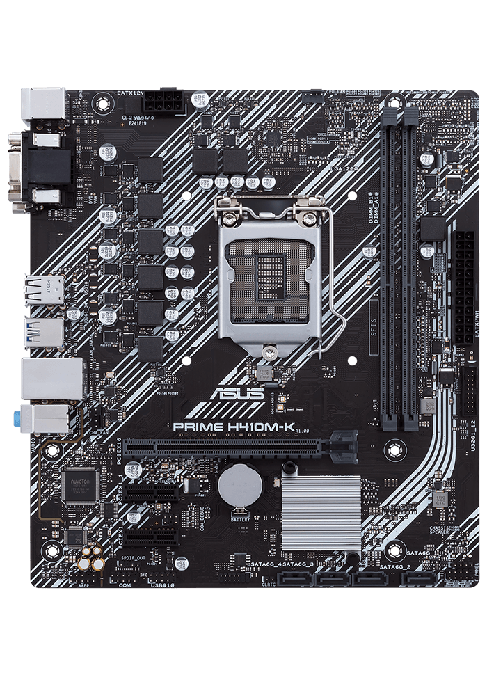

Tipos de listas
Listas desordenadas
- Caja
- Fuente
- Procesador
- Ventilador
- Placa Base
 Disco duro
Disco duro- Memoria RAM
- Tarjeta grafica
- Tarjeta de Sonido
 Tarjeta de Red
Tarjeta de Red
- Seguridad Informatica
- Seguridad física
- Seguridad Logica
- Conceptos Basicos
- Activos
- Vulnerabilidades
- Amenazas
- Ataques
- Riesgos
- Impacto
- Desastres
- Calamar
- Molusco cefalópodo comestible, de cuerpo alargado, con una concha interna en forma de pluma de ave y diez tentáculos provistos de ventosas, dos de ellos más largos que el resto, y que segrega un líquido negro para defenderse de los ataques.
- Lechuga
- Planta herbácea de la familia de las compuestas, con tallo ramoso de 40 a 60 cm de altura, hojas grandes, radicales, blandas, nerviosas, trasovadas, enteras o serradas, flores en muchas cabezuelas y de pétalos amarillentos, y fruto seco, gris, comprimido, con una sola semilla. Es originaria de la India, se cultiva en las huertas y hay de ella muchas variedades. Las hojas son comestibles, y del tallo se puede extraer abundante látex de sabor agradable.
- Atraer
- Dicho de un cuerpo: Acercar y retener en virtud de sus propiedades físicas a otro externo.
- Celebridad
- Fama, renombre o aplauso que tiene alguien o algo.